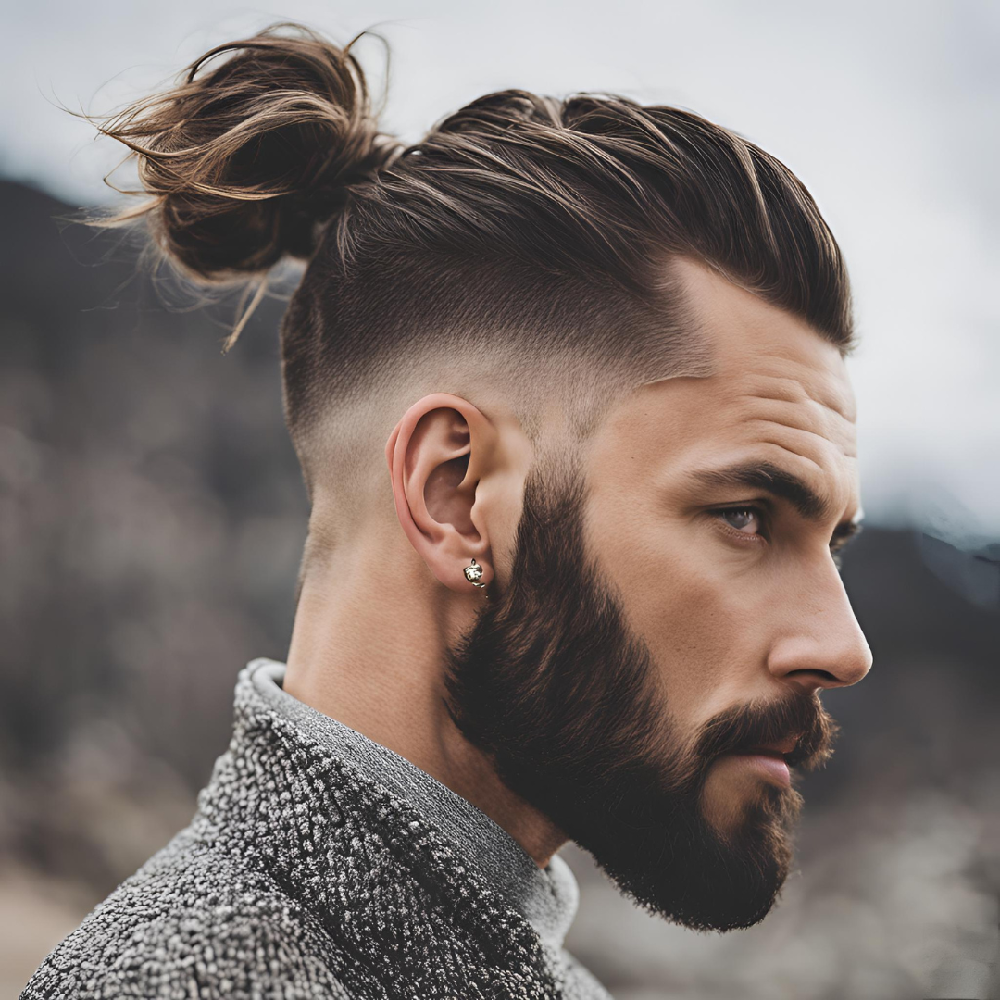

Top Knot (ทรงผมท็อปนอต)
เกี่ยวกับ Top Knot
Top Knot เป็นทรงผมที่มีความโดดเด่น โดยการรวบผมขึ้นไปด้านบนของศีรษะ มักเป็นที่นิยมในหมู่ผู้ชายและผู้หญิงที่มีผมยาว ทรงนี้ไม่เพียงแต่ดูทันสมัย แต่ยังช่วยให้รู้สึกเย็นสบายในวันที่อากาศร้อน นอกจากนี้ยังสามารถปรับแต่งได้หลายรูปแบบตามสไตล์ส่วนตัว
ประเภทของ Top Knot
1.Classic Top Knot: การรวบผมขึ้นไปด้านบนแบบเรียบง่าย เหมาะกับทุกโอกาส
2.Messy Top Knot: ทรงที่ดูไม่เป็นระเบียบมากนัก ให้ลุคที่ดูเป็นธรรมชาติและสดใส
3.Braided Top Knot: การเพิ่มเปียลงไปในทรงผมเพื่อเพิ่มความน่าสนใจ